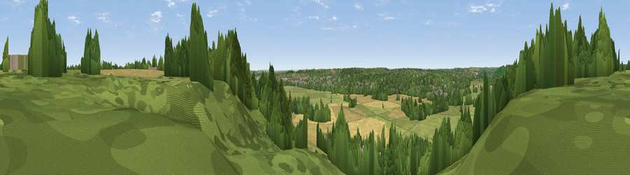

Viewpoint near Mapledurham
#28857 in England · top 25% of its area beats it · near MapledurhamWhere it is
The exact computed spot (SU 67875 76575). Click the marker for map links.
The view, rendered

A 360° render of this exact spot computed from the terrain model, tree cover and land cover — summer colours, afternoon light, calibrated against photographs of famous viewpoints. Real trees, hedges and buildings will differ in detail.
The panorama
Grey silhouette: terrain skyline in each direction (720 bearings, Earth curvature and refraction included). Dashed green: skyline with trees (+15 m) and buildings (+8 m) as obstacles. Blue strip: how far the ground is visible on each bearing.
Where the view opens
Wedge length = distance to the farthest visible ground on that bearing (vegetation-aware). Rings at 10, 25 and 50 km.
What fills the view
41% woodland · 34% grassland · 17% cropland · 7% built-up ·
Angular shares of the visible panorama (visual magnitude), not map area. Landscape diversity 0.54 (0–1 Shannon).
Key numbers
More beautiful places nearby
The staircase of upgrades: each row has a higher view potential than everything closer. Driving times are estimates from straight-line distance, calibrated against real road routing — check an actual route before setting out.
| Place | Direction | Drive | Score |
|---|---|---|---|
| Viewpoint near Mapledurham | NW · 2 km | ~5 min | 46.6 |
| Viewpoint near Whitchurch-on-Thames | WNW · 4 km | ~10 min | 55.0 |
| Viewpoint near Streatley | WNW · 10 km | ~20 min | 56.7 |
| Viewpoint near Streatley | WNW · 10 km | ~20 min | 57.3 |
| Viewpoint near Moulsford | WNW · 12 km | ~22 min | 58.8 |
| Viewpoint near Nuffield | N · 13 km | ~23 min | 62.3 |
| Viewpoint near Cookley Green | N · 15 km | ~27 min | 64.3 |
| Viewpoint near Cookley Green | N · 15 km | ~27 min | 68.5 |
51.48406, -1.02390 · source: screening · position refined by local search. Computed location — check access rights before visiting.